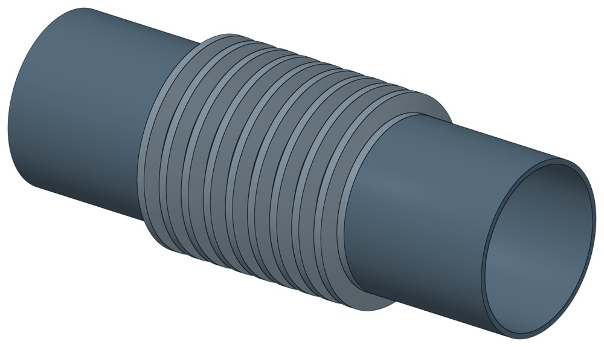

Компенсатор сильфонный КСО
Dн 21.3–1220 мм, масса 0,9–137 кг.

- Диаметр трубы Dн
- 21,3–1220 мм
- Исполнений
- 265
- Масса
- 0,9–137 кг
- Цена в магазине
- 2 306–435 770 ₽
- 3D-модели
- у всех исполнений (условные: общий вид по габаритам)
Таблица исполнений КСО
| Обозначение | Код ПРОМБУРГ | Исп. | Думм | Рукгс/см² | Ходмм | Lмм | D нар.мм | Наличие | Цена₽ | Массакг | 3D |
|---|---|---|---|---|---|---|---|---|---|---|---|
| КСО 1000-25-220 | ПБ-КСО-1000-1 | — | 1000 | 25 | 220 | 742 | 1102 | наличие уточняйте | 264 148 | 137 | 3D |
| КСО 800-25-210 | ПБ-КСО-0800-1 | — | 800 | 25 | 210 | 743 | 900 | в наличии | 178 597 | 96 | 3D |
| КСО 700-25-210 | ПБ-КСО-0700-1 | — | 700 | 25 | 210 | 710 | 800 | в наличии | 128 585 | 85 | 3D |
| КСО 600-25-200 | ПБ-КСО-0600-2 | — | 600 | 25 | 200 | 713 | 705 | в наличии | 106 924 | 72 | 3D |
| КСО 500-25-200 | ПБ-КСО-0500-1 | — | 500 | 25 | 200 | 692 | 590 | в наличии | 102 568 | 45 | 3D |
| КСО 500-16-200 | ПБ-КСО-0500-2 | — | 500 | 16 | 200 | 682 | 590 | в наличии | 93 384 | 42 | 3D |
| КСО 500-16-80 | ПБ-КСО-0500-3 | — | 500 | 16 | 80 | 440 | 590 | остатки — наличие уточняйте | 58 503 | 25 | 3D |
| КСО 400-25-190 | ПБ-КСО-0400-1 | — | 400 | 25 | 190 | 678 | 479 | остатки — наличие уточняйте | 61 239 | 39 | 3D |
| КСО 400-16-190 | ПБ-КСО-0400-2 | — | 400 | 16 | 190 | 668 | 479 | остатки — наличие уточняйте | 57 252 | 30 | 3D |
| КСО 400-16-80 | ПБ-КСО-0400-3 | — | 400 | 16 | 80 | 390 | 479 | остатки — наличие уточняйте | 40 727 | 20 | 3D |
| КСО 350-16-180 | ПБ-КСО-0350-1 | — | 350 | 16 | 180 | 640 | 415 | остатки — наличие уточняйте | 41 732 | 29,2 | 3D |
| КСО 350-25-180 | ПБ-КСО-0350-2 | — | 350 | 25 | 180 | 658 | 415 | остатки — наличие уточняйте | 44 301 | 28 | 3D |
| КСО 350-16-80 | ПБ-КСО-0350-3 | — | 350 | 16 | 80 | 440 | 415 | в наличии | 31 459 | 17 | 3D |
| КСО 300-25-180 | ПБ-КСО-0300-1 | — | 300 | 25 | 180 | 632 | 371 | в наличии | 41 479 | 31 | 3D |
| КСО 300-16-80 | ПБ-КСО-0300-4 | — | 300 | 16 | 80 | 320 | 371 | в наличии | 24 828 | 11,8 | 3D |
| КСО 250-25-160 | ПБ-КСО-0250-1 | — | 250 | 25 | 160 | 621 | 318 | остатки — наличие уточняйте | 39 802 | 20 | 3D |
| КСО 250-16-160 | ПБ-КСО-0250-2 | — | 250 | 16 | 160 | 612 | 318 | остатки — наличие уточняйте | 37 883 | 16,4 | 3D |
| КСО 250-16-80 | ПБ-КСО-0250-3 | — | 250 | 16 | 80 | 315 | 318 | остатки — наличие уточняйте | 23 936 | 9,6 | 3D |
| КСО 200-16-80 | ПБ-КСО-0200-4 | — | 200 | 16 | 80 | 300 | 266 | остатки — наличие уточняйте | 20 521 | 6,2 | 3D |
| КСО 150-16-60 | ПБ-КСО-0150-3 | — | 150 | 16 | 60 | 270 | 191 | остатки — наличие уточняйте | 9 746 | 3,6 | 3D |
| КСО 125-16-60 | ПБ-КСО-0125-3 | — | 125 | 16 | 60 | 250 | 167 | остатки — наличие уточняйте | 7 650 | 2,4 | 3D |
| КСО 100-16-60 | ПБ-КСО-0100-3 | — | 100 | 16 | 60 | 270 | 138 | остатки — наличие уточняйте | 6 618 | 1,7 | 3D |
| КСО 80-16-60 | ПБ-КСО-0080-3 | — | 80 | 16 | 60 | 250 | 110 | остатки — наличие уточняйте | 5 934 | 1,3 | 3D |
| КСО 65-16-60 | ПБ-КСО-0065-3 | — | 65 | 16 | 60 | 240 | 95 | в наличии | 5 167 | 0,9 | 3D |
| КСО 15-16-60, L 390, НЖ | ПБ-КСО-0015-2 | НЖ | 15 | 16 | 60 | 390 | — | под заказ | 3 721 | — | 3D |
| КСО 20-16-60, L 390, НЖ | ПБ-КСО-0020-2 | НЖ | 20 | 16 | 60 | 390 | — | под заказ | 3 721 | — | 3D |
| КСО 25-16-60, L 360, НЖ | ПБ-КСО-0025-2 | НЖ | 25 | 16 | 60 | 360 | — | под заказ | 4 267 | — | 3D |
| КСО 32-16-60, L 395, НЖ | ПБ-КСО-0032-3 | НЖ | 32 | 16 | 60 | 395 | — | под заказ | 4 610 | — | 3D |
| КСО 40-16-60, L 355, НЖ | ПБ-КСО-0040-3 | НЖ | 40 | 16 | 60 | 355 | — | под заказ | 3 845 | — | 3D |
| КСО 50-16-60, L 280 | ПБ-КСО-0050-10 | — | 50 | 16 | 60 | 280 | — | наличие уточняйте | 2 306 | — | 3D |
| КСО 50-16-60, L 345, НЖ | ПБ-КСО-0050-11 | НЖ | 50 | 16 | 60 | 345 | — | под заказ | 4 150 | — | 3D |
| КСО 50-16-80, L 365, НЖ | ПБ-КСО-0050-12 | НЖ | 50 | 16 | 80 | 365 | — | под заказ | 5 452 | — | 3D |
| КСО 50-25-60, L 280 | ПБ-КСО-0050-13 | — | 50 | 25 | 60 | 280 | — | наличие уточняйте | 3 466 | — | 3D |
| КСО 65-16-60, L 300 | ПБ-КСО-0065-4 | — | 65 | 16 | 60 | 300 | — | наличие уточняйте | 2 690 | — | 3D |
| КСО 65-16-60, L 355, НЖ | ПБ-КСО-0065-5 | НЖ | 65 | 16 | 60 | 355 | — | под заказ | 4 680 | — | 3D |
| КСО 65-16-80, L 345, НЖ | ПБ-КСО-0065-6 | НЖ | 65 | 16 | 80 | 345 | — | под заказ | 6 146 | — | 3D |
| КСО 65-25-60, L 300 | ПБ-КСО-0065-7 | — | 65 | 25 | 60 | 300 | — | наличие уточняйте | 4 311 | — | 3D |
| КСО 65-25-70, L 380 | ПБ-КСО-0065-8 | — | 65 | 25 | 70 | 380 | — | остатки — наличие уточняйте | 6 285 | — | 3D |
| КСО 65-25-80, L 290 | ПБ-КСО-0065-9 | — | 65 | 25 | 80 | 290 | — | ожидается поступление | 6 075 | — | 3D |
| КСО 80-16-60, L 240 | ПБ-КСО-0080-5 | — | 80 | 16 | 60 | 240 | — | ожидается поступление | 5 934 | — | 3D |
| КСО 80-16-60, L 330 | ПБ-КСО-0080-6 | — | 80 | 16 | 60 | 330 | — | наличие уточняйте | 3 245 | — | 3D |
| КСО 80-16-70, L 415 | ПБ-КСО-0080-7 | — | 80 | 16 | 70 | 415 | — | остатки — наличие уточняйте | 6 775 | — | 3D |
| КСО 80-16-90, L 280 | ПБ-КСО-0080-8 | — | 80 | 16 | 90 | 280 | — | ожидается поступление | 6 583 | — | 3D |
| КСО 80-16-90, L 360 | ПБ-КСО-0080-9 | — | 80 | 16 | 90 | 360 | — | наличие уточняйте | 3 843 | — | 3D |
| КСО 80-16-90, L 355, НЖ | ПБ-КСО-0080-10 | НЖ | 80 | 16 | 90 | 355 | — | под заказ | 6 700 | — | 3D |
| КСО 80-25-70, L 415 | ПБ-КСО-0080-11 | — | 80 | 25 | 70 | 415 | — | остатки — наличие уточняйте | 6 831 | — | 3D |
| КСО 80-25-70, L 350 | ПБ-КСО-0080-12 | — | 80 | 25 | 70 | 350 | — | наличие уточняйте | 5 664 | — | 3D |
| КСО 80-25-90, L 280 | ПБ-КСО-0080-13 | — | 80 | 25 | 90 | 280 | — | ожидается поступление | 6 583 | — | 3D |
| КСО 100-16-60, L 240 | ПБ-КСО-0100-5 | — | 100 | 16 | 60 | 240 | — | ожидается поступление | 6 618 | — | 3D |
| КСО 100-16-60, L 320, НЖ | ПБ-КСО-0100-6 | НЖ | 100 | 16 | 60 | 320 | — | под заказ | 6 677 | — | 3D |
| КСО 100-16-80, L 345 | ПБ-КСО-0100-7 | — | 100 | 16 | 80 | 345 | — | наличие уточняйте | 3 852 | — | 3D |
| КСО 100-16-100, L 408 | ПБ-КСО-0100-8 | — | 100 | 16 | 100 | 408 | — | остатки — наличие уточняйте | 8 364 | — | 3D |
| КСО 100-16-100, L 400 | ПБ-КСО-0100-9 | — | 100 | 16 | 100 | 400 | — | наличие уточняйте | 5 809 | — | 3D |
| КСО 100-16-100, L 360, НЖ | ПБ-КСО-0100-10 | НЖ | 100 | 16 | 100 | 360 | — | под заказ | 7 246 | — | 3D |
| КСО 100-16-120, L 320 | ПБ-КСО-0100-11 | — | 100 | 16 | 120 | 320 | — | ожидается поступление | 8 846 | — | 3D |
| КСО 100-16-120, L 530 | ПБ-КСО-0100-12 | — | 100 | 16 | 120 | 530 | — | наличие уточняйте | 6 199 | — | 3D |
| КСО 100-16-120, L 410 | ПБ-КСО-0100-13 | — | 100 | 16 | 120 | 410 | — | под заказ | 9 844 | — | 3D |
| КСО 100-16-120, L 410, НЖ | ПБ-КСО-0100-14 | НЖ | 100 | 16 | 120 | 410 | — | под заказ | 11 614 | — | 3D |
| КСО 100-25-100, L 408 | ПБ-КСО-0100-15 | — | 100 | 25 | 100 | 408 | — | остатки — наличие уточняйте | 8 656 | — | 3D |
| КСО 100-25-100, L 400 | ПБ-КСО-0100-16 | — | 100 | 25 | 100 | 400 | — | наличие уточняйте | 7 499 | — | 3D |
| КСО 100-25-120, L 320 | ПБ-КСО-0100-17 | — | 100 | 25 | 120 | 320 | — | ожидается поступление | 8 846 | — | 3D |
| КСО 125-16-60, L 240 | ПБ-КСО-0125-4 | — | 125 | 16 | 60 | 240 | — | ожидается поступление | 7 650 | — | 3D |
| КСО 125-16-60, L 400 | ПБ-КСО-0125-5 | — | 125 | 16 | 60 | 400 | — | наличие уточняйте | 5 647 | — | 3D |
| КСО 125-16-60, L 320 | ПБ-КСО-0125-6 | — | 125 | 16 | 60 | 320 | — | под заказ | 8 229 | — | 3D |
| КСО 125-16-60, L 320, НЖ | ПБ-КСО-0125-7 | НЖ | 125 | 16 | 60 | 320 | — | под заказ | 8 853 | — | 3D |
| КСО 125-16-100, L 428 | ПБ-КСО-0125-8 | — | 125 | 16 | 100 | 428 | — | остатки — наличие уточняйте | 9 587 | — | 3D |
| КСО 125-16-100, L 440 | ПБ-КСО-0125-9 | — | 125 | 16 | 100 | 440 | — | наличие уточняйте | 7 092 | — | 3D |
| КСО 125-16-100, L 370 | ПБ-КСО-0125-10 | — | 125 | 16 | 100 | 370 | — | под заказ | 9 032 | — | 3D |
| КСО 125-16-100, L 370, НЖ | ПБ-КСО-0125-11 | НЖ | 125 | 16 | 100 | 370 | — | под заказ | 9 914 | — | 3D |
| КСО 125-16-130, L 330 | ПБ-КСО-0125-12 | — | 125 | 16 | 130 | 330 | — | ожидается поступление | 9 794 | — | 3D |
| КСО 125-16-130, L 630 | ПБ-КСО-0125-13 | — | 125 | 16 | 130 | 630 | — | наличие уточняйте | 8 653 | — | 3D |
| КСО 125-16-130, L 440 | ПБ-КСО-0125-14 | — | 125 | 16 | 130 | 440 | — | под заказ | 11 474 | — | 3D |
| КСО 125-16-130, L 440, НЖ | ПБ-КСО-0125-15 | НЖ | 125 | 16 | 130 | 440 | — | под заказ | 14 789 | — | 3D |
| КСО 125-16-130, L 420 | ПБ-КСО-0125-16 | — | 125 | 16 | 130 | 420 | — | под заказ | 11 474 | — | 3D |
| КСО 125-16-130, L 420, НЖ | ПБ-КСО-0125-17 | НЖ | 125 | 16 | 130 | 420 | — | под заказ | 14 789 | — | 3D |
| КСО 125-25-100, L 428 | ПБ-КСО-0125-18 | — | 125 | 25 | 100 | 428 | — | остатки — наличие уточняйте | 9 886 | — | 3D |
| КСО 125-25-100, L 440 | ПБ-КСО-0125-19 | — | 125 | 25 | 100 | 440 | — | наличие уточняйте | 9 129 | — | 3D |
| КСО 125-25-130, L 330 | ПБ-КСО-0125-20 | — | 125 | 25 | 130 | 330 | — | ожидается поступление | 9 794 | — | 3D |
| КСО 150-16-60, L 250 | ПБ-КСО-0150-4 | — | 150 | 16 | 60 | 250 | — | ожидается поступление | 9 746 | — | 3D |
| КСО 150-16-60, L 335 | ПБ-КСО-0150-5 | — | 150 | 16 | 60 | 335 | — | наличие уточняйте | 6 839 | — | 3D |
| КСО 150-16-60, L 325 | ПБ-КСО-0150-6 | — | 150 | 16 | 60 | 325 | — | под заказ | 9 407 | — | 3D |
| КСО 150-16-60, L 325, НЖ | ПБ-КСО-0150-7 | НЖ | 150 | 16 | 60 | 325 | — | под заказ | 10 132 | — | 3D |
| КСО 150-16-100, L 305 | ПБ-КСО-0150-8 | — | 150 | 16 | 100 | 305 | — | ожидается поступление | 12 607 | — | 3D |
| КСО 150-16-100, L 485 | ПБ-КСО-0150-9 | — | 150 | 16 | 100 | 485 | — | остатки — наличие уточняйте | 13 253 | — | 3D |
| КСО 150-16-100, L 380 | ПБ-КСО-0150-10 | — | 150 | 16 | 100 | 380 | — | под заказ | 10 351 | — | 3D |
| КСО 150-16-100, L 380, НЖ | ПБ-КСО-0150-11 | НЖ | 150 | 16 | 100 | 380 | — | под заказ | 11 396 | — | 3D |
| КСО 150-16-150, L 370 | ПБ-КСО-0150-12 | — | 150 | 16 | 150 | 370 | — | ожидается поступление | 13 624 | — | 3D |
| КСО 150-16-150, L 780 | ПБ-КСО-0150-13 | — | 150 | 16 | 150 | 780 | — | наличие уточняйте | 14 232 | — | 3D |
| КСО 150-16-150, L 435 | ПБ-КСО-0150-14 | — | 150 | 16 | 150 | 435 | — | под заказ | 14 297 | — | 3D |
| КСО 150-16-150, L 435, НЖ | ПБ-КСО-0150-15 | НЖ | 150 | 16 | 150 | 435 | — | под заказ | 15 865 | — | 3D |
| КСО 150-25-100, L 305 | ПБ-КСО-0150-16 | — | 150 | 25 | 100 | 305 | — | ожидается поступление | 12 607 | — | 3D |
| КСО 150-25-100, L 485 | ПБ-КСО-0150-17 | — | 150 | 25 | 100 | 485 | — | остатки — наличие уточняйте | 14 492 | — | 3D |
| КСО 150-25-150, L 370 | ПБ-КСО-0150-18 | — | 150 | 25 | 150 | 370 | — | ожидается поступление | 13 624 | — | 3D |
| КСО 200-16-80, L 280 | ПБ-КСО-0200-5 | — | 200 | 16 | 80 | 280 | — | ожидается поступление | 20 521 | — | 3D |
| КСО 200-16-80, L 465 | ПБ-КСО-0200-6 | — | 200 | 16 | 80 | 465 | — | наличие уточняйте | 13 882 | — | 3D |
| КСО 200-16-80, L 355 | ПБ-КСО-0200-7 | — | 200 | 16 | 80 | 355 | — | под заказ | 15 935 | — | 3D |
| КСО 200-16-80, L 355, НЖ | ПБ-КСО-0200-8 | НЖ | 200 | 16 | 80 | 355 | — | под заказ | 17 659 | — | 3D |
| КСО 200-16-100, L 425 | ПБ-КСО-0200-9 | — | 200 | 16 | 100 | 425 | — | ожидается поступление | 24 654 | — | 3D |
| КСО 200-16-100, L 475 | ПБ-КСО-0200-10 | — | 200 | 16 | 100 | 475 | — | остатки — наличие уточняйте | 23 935 | — | 3D |
| КСО 200-16-100, L 375 | ПБ-КСО-0200-11 | — | 200 | 16 | 100 | 375 | — | под заказ | 16 357 | — | 3D |
| КСО 200-16-100, L 375, НЖ | ПБ-КСО-0200-12 | НЖ | 200 | 16 | 100 | 375 | — | под заказ | 18 080 | — | 3D |
| КСО 200-16-160, L 490 | ПБ-КСО-0200-13 | — | 200 | 16 | 160 | 490 | — | ожидается поступление | 29 280 | — | 3D |
| КСО 200-16-160, L 560 | ПБ-КСО-0200-14 | — | 200 | 16 | 160 | 560 | — | остатки — наличие уточняйте | 27 935 | — | 3D |
| КСО 200-16-160, L 600 | ПБ-КСО-0200-15 | — | 200 | 16 | 160 | 600 | — | наличие уточняйте | 19 610 | — | 3D |
| КСО 200-16-160, L 480 | ПБ-КСО-0200-16 | — | 200 | 16 | 160 | 480 | — | под заказ | 21 325 | — | 3D |
| КСО 200-16-160, L 480, НЖ | ПБ-КСО-0200-17 | НЖ | 200 | 16 | 160 | 480 | — | под заказ | 27 776 | — | 3D |
| КСО 200-16-160, L 465 | ПБ-КСО-0200-18 | — | 200 | 16 | 160 | 465 | — | под заказ | 21 325 | — | 3D |
| КСО 200-16-160, L 465, НЖ | ПБ-КСО-0200-19 | НЖ | 200 | 16 | 160 | 465 | — | под заказ | 27 776 | — | 3D |
| КСО 200-25-100, L 425 | ПБ-КСО-0200-20 | — | 200 | 25 | 100 | 425 | — | ожидается поступление | 24 654 | — | 3D |
| КСО 200-25-100, L 475 | ПБ-КСО-0200-21 | — | 200 | 25 | 100 | 475 | — | остатки — наличие уточняйте | 25 337 | — | 3D |
| КСО 200-25-160, L 490 | ПБ-КСО-0200-22 | — | 200 | 25 | 160 | 490 | — | ожидается поступление | 29 280 | — | 3D |
| КСО 200-25-160, L 560 | ПБ-КСО-0200-23 | — | 200 | 25 | 160 | 560 | — | остатки — наличие уточняйте | 30 729 | — | 3D |
| КСО 200-25-160, L 600 | ПБ-КСО-0200-24 | — | 200 | 25 | 160 | 600 | — | наличие уточняйте | 22 170 | — | 3D |
| КСО 250-16-80, L 290 | ПБ-КСО-0250-4 | — | 250 | 16 | 80 | 290 | — | ожидается поступление | 23 936 | — | 3D |
| КСО 250-16-80, L 485 | ПБ-КСО-0250-5 | — | 250 | 16 | 80 | 485 | — | наличие уточняйте | 18 806 | — | 3D |
| КСО 250-16-80, L 345 | ПБ-КСО-0250-6 | — | 250 | 16 | 80 | 345 | — | под заказ | 16 474 | — | 3D |
| КСО 250-16-80, L 345, НЖ | ПБ-КСО-0250-7 | НЖ | 250 | 16 | 80 | 345 | — | под заказ | 17 971 | — | 3D |
| КСО 250-16-100, L 445 | ПБ-КСО-0250-8 | — | 250 | 16 | 100 | 445 | — | в наличии | 29 708 | — | 3D |
| КСО 250-16-100, L 435 | ПБ-КСО-0250-9 | — | 250 | 16 | 100 | 435 | — | остатки — наличие уточняйте | 29 708 | — | 3D |
| КСО 250-16-100, L 365 | ПБ-КСО-0250-10 | — | 250 | 16 | 100 | 365 | — | под заказ | 18 408 | — | 3D |
| КСО 250-16-100, L 365, НЖ | ПБ-КСО-0250-11 | НЖ | 250 | 16 | 100 | 365 | — | под заказ | 20 553 | — | 3D |
| КСО 250-16-160, L 610 | ПБ-КСО-0250-12 | — | 250 | 16 | 160 | 610 | — | наличие уточняйте | 32 137 | — | 3D |
| КСО 250-16-160, L 445 | ПБ-КСО-0250-13 | — | 250 | 16 | 160 | 445 | — | под заказ | 26 832 | — | 3D |
| КСО 250-16-160, L 445, НЖ | ПБ-КСО-0250-14 | НЖ | 250 | 16 | 160 | 445 | — | под заказ | 31 122 | — | 3D |
| КСО 250-16-180, L 550 | ПБ-КСО-0250-15 | — | 250 | 16 | 180 | 550 | — | ожидается поступление | 38 837 | — | 3D |
| КСО 250-16-180, L 480 | ПБ-КСО-0250-16 | — | 250 | 16 | 180 | 480 | — | под заказ | 30 272 | — | 3D |
| КСО 250-16-180, L 480, НЖ | ПБ-КСО-0250-17 | НЖ | 250 | 16 | 180 | 480 | — | под заказ | 36 504 | — | 3D |
| КСО 250-16-180, L 525 | ПБ-КСО-0250-18 | — | 250 | 16 | 180 | 525 | — | под заказ | 30 272 | — | 3D |
| КСО 250-16-180, L 525, НЖ | ПБ-КСО-0250-19 | НЖ | 250 | 16 | 180 | 525 | — | под заказ | 36 504 | — | 3D |
| КСО 250-25-100, L 445 | ПБ-КСО-0250-20 | — | 250 | 25 | 100 | 445 | — | ожидается поступление | 31 193 | — | 3D |
| КСО 250-25-100, L 485 | ПБ-КСО-0250-21 | — | 250 | 25 | 100 | 485 | — | остатки — наличие уточняйте | 31 194 | — | 3D |
| КСО 250-25-160, L 610 | ПБ-КСО-0250-22 | — | 250 | 25 | 160 | 610 | — | наличие уточняйте | 31 335 | — | 3D |
| КСО 250-25-180, L 550 | ПБ-КСО-0250-23 | — | 250 | 25 | 180 | 550 | — | ожидается поступление | 38 837 | — | 3D |
| КСО 300-16-80, L 295 | ПБ-КСО-0300-5 | — | 300 | 16 | 80 | 295 | — | ожидается поступление | 24 827 | — | 3D |
| КСО 300-16-80, L 355 | ПБ-КСО-0300-6 | — | 300 | 16 | 80 | 355 | — | под заказ | 20 795 | — | 3D |
| КСО 300-16-80, L 355, НЖ | ПБ-КСО-0300-7 | НЖ | 300 | 16 | 80 | 355 | — | под заказ | 23 338 | — | 3D |
| КСО 300-16-100, L 425 | ПБ-КСО-0300-8 | — | 300 | 16 | 100 | 425 | — | ожидается поступление | 33 182 | — | 3D |
| КСО 300-16-100, L 475 | ПБ-КСО-0300-9 | — | 300 | 16 | 100 | 475 | — | в наличии | 33 182 | — | 3D |
| КСО 300-16-100, L 375 | ПБ-КСО-0300-10 | — | 300 | 16 | 100 | 375 | — | под заказ | 21 427 | — | 3D |
| КСО 300-16-100, L 375, НЖ | ПБ-КСО-0300-11 | НЖ | 300 | 16 | 100 | 375 | — | под заказ | 23 969 | — | 3D |
| КСО 300-16-180, L 632 | ПБ-КСО-0300-12 | — | 300 | 16 | 180 | 632 | — | в наличии | 40 016 | — | 3D |
| КСО 300-16-180, L 710 | ПБ-КСО-0300-13 | — | 300 | 16 | 180 | 710 | — | наличие уточняйте | 36 501 | — | 3D |
| КСО 300-16-180, L 480 | ПБ-КСО-0300-14 | — | 300 | 16 | 180 | 480 | — | под заказ | 34 850 | — | 3D |
| КСО 300-16-180, L 480, НЖ | ПБ-КСО-0300-15 | НЖ | 300 | 16 | 180 | 480 | — | под заказ | 42 182 | — | 3D |
| КСО 300-16-180, L 500 | ПБ-КСО-0300-16 | — | 300 | 16 | 180 | 500 | — | под заказ | 34 850 | — | 3D |
| КСО 300-16-180, L 500, НЖ | ПБ-КСО-0300-17 | НЖ | 300 | 16 | 180 | 500 | — | под заказ | 42 182 | — | 3D |
| КСО 300-16-190, L 515 | ПБ-КСО-0300-18 | — | 300 | 16 | 190 | 515 | — | ожидается поступление | 41 023 | — | 3D |
| КСО 300-16-190, L 515, исп. 0,6 | ПБ-КСО-0300-19 | — | 300 | 16 | 190 | 515 | — | под заказ | 35 482 | — | 3D |
| КСО 300-16-190, L 515, НЖ | ПБ-КСО-0300-20 | НЖ | 300 | 16 | 190 | 515 | — | под заказ | 51 230 | — | 3D |
| КСО 300-16-190, L 525 | ПБ-КСО-0300-21 | — | 300 | 16 | 190 | 525 | — | под заказ | 35 482 | — | 3D |
| КСО 300-16-190, L 525, НЖ | ПБ-КСО-0300-22 | НЖ | 300 | 16 | 190 | 525 | — | под заказ | 51 230 | — | 3D |
| КСО 300-25-180, L 710 | ПБ-КСО-0300-23 | — | 300 | 25 | 180 | 710 | — | наличие уточняйте | 38 851 | — | 3D |
| КСО 300-25-190, L 525 | ПБ-КСО-0300-24 | — | 300 | 25 | 190 | 525 | — | ожидается поступление | 41 150 | — | 3D |
| КСО 350-16-80, L 410 | ПБ-КСО-0350-4 | — | 350 | 16 | 80 | 410 | — | ожидается поступление | 31 460 | — | 3D |
| КСО 350-16-80, L 365, исп. 0,6 | ПБ-КСО-0350-5 | — | 350 | 16 | 80 | 365 | — | под заказ | 28 142 | — | 3D |
| КСО 350-16-80, L 365, исп. 0,8 | ПБ-КСО-0350-6 | — | 350 | 16 | 80 | 365 | — | под заказ | 28 142 | — | 3D |
| КСО 350-16-80, L 365, НЖ, исп. 0,6 | ПБ-КСО-0350-7 | НЖ | 350 | 16 | 80 | 365 | — | под заказ | 32 557 | — | 3D |
| КСО 350-16-80, L 365, НЖ, исп. 0,8 | ПБ-КСО-0350-8 | НЖ | 350 | 16 | 80 | 365 | — | под заказ | 32 557 | — | 3D |
| КСО 350-16-100, L 440 | ПБ-КСО-0350-9 | — | 350 | 16 | 100 | 440 | — | ожидается поступление | 36 147 | — | 3D |
| КСО 350-16-100, L 505 | ПБ-КСО-0350-10 | — | 350 | 16 | 100 | 505 | — | остатки — наличие уточняйте | 36 147 | — | 3D |
| КСО 350-16-100, L 390, исп. 0,6 | ПБ-КСО-0350-11 | — | 350 | 16 | 100 | 390 | — | под заказ | 28 142 | — | 3D |
| КСО 350-16-100, L 390, исп. 0,8 | ПБ-КСО-0350-12 | — | 350 | 16 | 100 | 390 | — | под заказ | 32 557 | — | 3D |
| КСО 350-16-100, L 390, НЖ | ПБ-КСО-0350-13 | НЖ | 350 | 16 | 100 | 390 | — | под заказ | 32 557 | — | 3D |
| КСО 350-16-180, L 725 | ПБ-КСО-0350-14 | — | 350 | 16 | 180 | 725 | — | наличие уточняйте | 36 306 | — | 3D |
| КСО 350-16-180, L 485, исп. 0,6 | ПБ-КСО-0350-15 | — | 350 | 16 | 180 | 485 | — | под заказ | 39 835 | — | 3D |
| КСО 350-16-180, L 485, исп. 0,8 | ПБ-КСО-0350-16 | — | 350 | 16 | 180 | 485 | — | под заказ | 39 835 | — | 3D |
| КСО 350-16-180, L 485, НЖ, исп. 0,6 | ПБ-КСО-0350-17 | НЖ | 350 | 16 | 180 | 485 | — | под заказ | 48 149 | — | 3D |
| КСО 350-16-180, L 485, НЖ, исп. 0,8 | ПБ-КСО-0350-18 | НЖ | 350 | 16 | 180 | 485 | — | под заказ | 48 149 | — | 3D |
| КСО 350-16-190, L 515 | ПБ-КСО-0350-19 | — | 350 | 16 | 190 | 515 | — | ожидается поступление | 41 328 | — | 3D |
| КСО 350-16-190, L 485 | ПБ-КСО-0350-20 | — | 350 | 16 | 190 | 485 | — | под заказ | 40 576 | — | 3D |
| КСО 350-16-190, L 485, НЖ | ПБ-КСО-0350-21 | НЖ | 350 | 16 | 190 | 485 | — | под заказ | 48 883 | — | 3D |
| КСО 350-16-190, L 510 | ПБ-КСО-0350-22 | — | 350 | 16 | 190 | 510 | — | под заказ | 40 576 | — | 3D |
| КСО 350-16-190, L 510, НЖ | ПБ-КСО-0350-23 | НЖ | 350 | 16 | 190 | 510 | — | под заказ | 48 883 | — | 3D |
| КСО 350-25-180, L 725 | ПБ-КСО-0350-24 | — | 350 | 25 | 180 | 725 | — | наличие уточняйте | 41 858 | — | 3D |
| КСО 350-25-190, L 525 | ПБ-КСО-0350-25 | — | 350 | 25 | 190 | 525 | — | ожидается поступление | 43 539 | — | 3D |
| КСО 400-16-80, L 420 | ПБ-КСО-0400-4 | — | 400 | 16 | 80 | 420 | — | ожидается поступление | 40 727 | — | 3D |
| КСО 400-16-80, L 345, исп. 0,6 | ПБ-КСО-0400-5 | — | 400 | 16 | 80 | 345 | — | под заказ | 32 269 | — | 3D |
| КСО 400-16-80, L 345, исп. 0,8 | ПБ-КСО-0400-6 | — | 400 | 16 | 80 | 345 | — | под заказ | 32 269 | — | 3D |
| КСО 400-16-80, L 345, НЖ, исп. 0,6 | ПБ-КСО-0400-7 | НЖ | 400 | 16 | 80 | 345 | — | под заказ | 36 169 | — | 3D |
| КСО 400-16-80, L 345, НЖ, исп. 0,8 | ПБ-КСО-0400-8 | НЖ | 400 | 16 | 80 | 345 | — | под заказ | 36 169 | — | 3D |
| КСО 400-16-100, L 370, исп. 0,6 | ПБ-КСО-0400-9 | — | 400 | 16 | 100 | 370 | — | под заказ | 36 262 | — | 3D |
| КСО 400-16-100, L 370, исп. 0,8 | ПБ-КСО-0400-10 | — | 400 | 16 | 100 | 370 | — | под заказ | 36 262 | — | 3D |
| КСО 400-16-100, L 370, НЖ, исп. 0,6 | ПБ-КСО-0400-11 | НЖ | 400 | 16 | 100 | 370 | — | под заказ | 41 480 | — | 3D |
| КСО 400-16-100, L 370, НЖ, исп. 0,8 | ПБ-КСО-0400-12 | НЖ | 400 | 16 | 100 | 370 | — | под заказ | 41 480 | — | 3D |
| КСО 400-16-190, L 475 | ПБ-КСО-0400-13 | — | 400 | 16 | 190 | 475 | — | под заказ | 49 561 | — | 3D |
| КСО 400-16-190, L 475, НЖ | ПБ-КСО-0400-14 | НЖ | 400 | 16 | 190 | 475 | — | под заказ | 59 210 | — | 3D |
| КСО 400-16-190, L 500 | ПБ-КСО-0400-15 | — | 400 | 16 | 190 | 500 | — | под заказ | 49 561 | — | 3D |
| КСО 400-16-190, L 500, НЖ | ПБ-КСО-0400-16 | НЖ | 400 | 16 | 190 | 500 | — | под заказ | 59 210 | — | 3D |
| КСО 400-16-200, L 515 | ПБ-КСО-0400-17 | — | 400 | 16 | 200 | 515 | — | ожидается поступление | 55 154 | — | 3D |
| КСО 400-16-200, L 715 | ПБ-КСО-0400-18 | — | 400 | 16 | 200 | 715 | — | наличие уточняйте | 54 243 | — | 3D |
| КСО 400-16-200, L 500, исп. 0,6 | ПБ-КСО-0400-19 | — | 400 | 16 | 200 | 500 | — | под заказ | 51 191 | — | 3D |
| КСО 400-16-200, L 500, исп. 0,8 | ПБ-КСО-0400-20 | — | 400 | 16 | 200 | 500 | — | под заказ | 51 191 | — | 3D |
| КСО 400-16-200, L 500, НЖ, исп. 0,6 | ПБ-КСО-0400-21 | НЖ | 400 | 16 | 200 | 500 | — | под заказ | 60 052 | — | 3D |
| КСО 400-16-200, L 500, НЖ, исп. 0,8 | ПБ-КСО-0400-22 | НЖ | 400 | 16 | 200 | 500 | — | под заказ | 60 052 | — | 3D |
| КСО 400-25-200, L 550 | ПБ-КСО-0400-23 | — | 400 | 25 | 200 | 550 | — | ожидается поступление | 59 221 | — | 3D |
| КСО 400-25-200, L 715 | ПБ-КСО-0400-24 | — | 400 | 25 | 200 | 715 | — | наличие уточняйте | 62 307 | — | 3D |
| КСО 450-16-100, L 330 | ПБ-КСО-0450-1 | — | 450 | 16 | 100 | 330 | — | под заказ | 45 521 | — | 3D |
| КСО 450-16-100, L 330, НЖ | ПБ-КСО-0450-2 | НЖ | 450 | 16 | 100 | 330 | — | под заказ | 51 496 | — | 3D |
| КСО 450-16-200, L 460 | ПБ-КСО-0450-3 | — | 450 | 16 | 200 | 460 | — | под заказ | 56 269 | — | 3D |
| КСО 450-16-200, L 460, НЖ | ПБ-КСО-0450-4 | НЖ | 450 | 16 | 200 | 460 | — | под заказ | 65 824 | — | 3D |
| КСО 500-16-80, L 455 | ПБ-КСО-0500-4 | — | 500 | 16 | 80 | 455 | — | ожидается поступление | 58 503 | — | 3D |
| КСО 500-16-80, L 390 | ПБ-КСО-0500-5 | — | 500 | 16 | 80 | 390 | — | под заказ | 51 285 | — | 3D |
| КСО 500-16-80, L 390, НЖ | ПБ-КСО-0500-6 | НЖ | 500 | 16 | 80 | 390 | — | под заказ | 62 283 | — | 3D |
| КСО 500-16-100, L 570 | ПБ-КСО-0500-7 | — | 500 | 16 | 100 | 570 | — | в наличии | 72 222 | — | 3D |
| КСО 500-16-100, L 390 | ПБ-КСО-0500-8 | — | 500 | 16 | 100 | 390 | — | под заказ | 52 338 | — | 3D |
| КСО 500-16-100, L 390, НЖ | ПБ-КСО-0500-9 | НЖ | 500 | 16 | 100 | 390 | — | под заказ | 63 336 | — | 3D |
| КСО 500-16-200, L 730 | ПБ-КСО-0500-10 | — | 500 | 16 | 200 | 730 | — | наличие уточняйте | 74 572 | — | 3D |
| КСО 500-16-200, L 505 | ПБ-КСО-0500-11 | — | 500 | 16 | 200 | 505 | — | под заказ | 69 615 | — | 3D |
| КСО 500-16-200, L 505, НЖ | ПБ-КСО-0500-12 | НЖ | 500 | 16 | 200 | 505 | — | под заказ | 91 611 | — | 3D |
| КСО 500-16-210, L 535 | ПБ-КСО-0500-13 | — | 500 | 16 | 210 | 535 | — | под заказ | 70 668 | — | 3D |
| КСО 500-16-210, L 535, НЖ | ПБ-КСО-0500-14 | НЖ | 500 | 16 | 210 | 535 | — | под заказ | 92 664 | — | 3D |
| КСО 500-25-200, L 730 | ПБ-КСО-0500-15 | — | 500 | 25 | 200 | 730 | — | наличие уточняйте | 77 612 | — | 3D |
| КСО 600-16-100, L 395 | ПБ-КСО-0600-3 | — | 600 | 16 | 100 | 395 | — | под заказ | 59 062 | — | 3D |
| КСО 600-16-100, L 395, НЖ | ПБ-КСО-0600-4 | НЖ | 600 | 16 | 100 | 395 | — | под заказ | 72 142 | — | 3D |
| КСО 600-16-200, L 750 | ПБ-КСО-0600-5 | — | 600 | 16 | 200 | 750 | — | наличие уточняйте | 83 276 | — | 3D |
| КСО 600-16-200, L 515 | ПБ-КСО-0600-6 | — | 600 | 16 | 200 | 515 | — | под заказ | 80 855 | — | 3D |
| КСО 600-16-200, L 515, НЖ | ПБ-КСО-0600-7 | НЖ | 600 | 16 | 200 | 515 | — | под заказ | 107 000 | — | 3D |
| КСО 600-16-220, L 545 | ПБ-КСО-0600-8 | — | 600 | 16 | 220 | 545 | — | под заказ | 82 111 | — | 3D |
| КСО 600-16-220, L 545, НЖ | ПБ-КСО-0600-9 | НЖ | 600 | 16 | 220 | 545 | — | под заказ | 108 264 | — | 3D |
| КСО 600-25-200, L 750 | ПБ-КСО-0600-10 | — | 600 | 25 | 200 | 750 | — | наличие уточняйте | 100 706 | — | 3D |
| КСО 700-16-100, L 420 | ПБ-КСО-0700-3 | — | 700 | 16 | 100 | 420 | — | под заказ | 90 636 | — | 3D |
| КСО 700-16-100, L 420, НЖ | ПБ-КСО-0700-4 | НЖ | 700 | 16 | 100 | 420 | — | под заказ | 109 340 | — | 3D |
| КСО 700-16-100, L 450 | ПБ-КСО-0700-5 | — | 700 | 16 | 100 | 450 | — | под заказ | 109 340 | — | 3D |
| КСО 700-16-210, L 780 | ПБ-КСО-0700-6 | — | 700 | 16 | 210 | 780 | — | наличие уточняйте | 112 806 | — | 3D |
| КСО 700-16-210, L 590, исп. 0,8 | ПБ-КСО-0700-7 | — | 700 | 16 | 210 | 590 | — | под заказ | 121 805 | — | 3D |
| КСО 700-16-210, L 590, исп. 1,0 | ПБ-КСО-0700-8 | — | 700 | 16 | 210 | 590 | — | под заказ | 121 805 | — | 3D |
| КСО 700-16-210, L 590, НЖ, исп. 0,8 | ПБ-КСО-0700-9 | НЖ | 700 | 16 | 210 | 590 | — | под заказ | 159 206 | — | 3D |
| КСО 700-16-210, L 590, НЖ, исп. 1,0 | ПБ-КСО-0700-10 | НЖ | 700 | 16 | 210 | 590 | — | под заказ | 159 206 | — | 3D |
| КСО 700-16-220, L 590 | ПБ-КСО-0700-11 | — | 700 | 16 | 220 | 590 | — | под заказ | 123 279 | — | 3D |
| КСО 700-16-220, L 590, НЖ | ПБ-КСО-0700-12 | НЖ | 700 | 16 | 220 | 590 | — | под заказ | 160 672 | — | 3D |
| КСО 700-16-220, L 620 | ПБ-КСО-0700-13 | — | 700 | 16 | 220 | 620 | — | под заказ | 123 279 | — | 3D |
| КСО 700-16-220, L 620, НЖ | ПБ-КСО-0700-14 | НЖ | 700 | 16 | 220 | 620 | — | под заказ | 160 672 | — | 3D |
| КСО 700-25-210, L 780 | ПБ-КСО-0700-15 | — | 700 | 25 | 210 | 780 | — | наличие уточняйте | 117 369 | — | 3D |
| КСО 800-16-210, L 780 | ПБ-КСО-0800-2 | — | 800 | 16 | 210 | 780 | — | наличие уточняйте | 144 723 | — | 3D |
| КСО 800-16-210, L 585, исп. 0,8 | ПБ-КСО-0800-3 | — | 800 | 16 | 210 | 585 | — | под заказ | 152 443 | — | 3D |
| КСО 800-16-210, L 585, исп. 1,0 | ПБ-КСО-0800-4 | — | 800 | 16 | 210 | 585 | — | под заказ | 152 443 | — | 3D |
| КСО 800-16-210, L 585, НЖ, исп. 0,8 | ПБ-КСО-0800-5 | НЖ | 800 | 16 | 210 | 585 | — | под заказ | 216 325 | — | 3D |
| КСО 800-16-210, L 585, НЖ, исп. 1,0 | ПБ-КСО-0800-6 | НЖ | 800 | 16 | 210 | 585 | — | под заказ | 216 325 | — | 3D |
| КСО 800-16-240, L 620 | ПБ-КСО-0800-7 | — | 800 | 16 | 240 | 620 | — | под заказ | 154 128 | — | 3D |
| КСО 800-16-240, L 620, НЖ | ПБ-КСО-0800-8 | НЖ | 800 | 16 | 240 | 620 | — | под заказ | 218 010 | — | 3D |
| КСО 800-16-240, L 625 | ПБ-КСО-0800-9 | — | 800 | 16 | 240 | 625 | — | под заказ | 154 128 | — | 3D |
| КСО 800-16-240, L 625, НЖ | ПБ-КСО-0800-10 | НЖ | 800 | 16 | 240 | 625 | — | под заказ | 218 010 | — | 3D |
| КСО 800-25-210, L 780 | ПБ-КСО-0800-11 | — | 800 | 25 | 210 | 780 | — | наличие уточняйте | 149 066 | — | 3D |
| КСО 900-16-210, L 600 | ПБ-КСО-0900-1 | — | 900 | 16 | 210 | 600 | — | под заказ | 168 503 | — | 3D |
| КСО 900-16-210, L 600, НЖ | ПБ-КСО-0900-2 | НЖ | 900 | 16 | 210 | 600 | — | под заказ | 240 162 | — | 3D |
| КСО 900-16-210, L 560 | ПБ-КСО-0900-3 | — | 900 | 16 | 210 | 560 | — | под заказ | 168 503 | — | 3D |
| КСО 900-16-210, L 560, НЖ | ПБ-КСО-0900-4 | НЖ | 900 | 16 | 210 | 560 | — | под заказ | 240 162 | — | 3D |
| КСО 900-16-260, L 680 | ПБ-КСО-0900-5 | — | 900 | 16 | 260 | 680 | — | под заказ | 170 399 | — | 3D |
| КСО 900-16-260, L 680, НЖ | ПБ-КСО-0900-6 | НЖ | 900 | 16 | 260 | 680 | — | под заказ | 242 057 | — | 3D |
| КСО 900-16-260, L 640 | ПБ-КСО-0900-7 | — | 900 | 16 | 260 | 640 | — | под заказ | 170 399 | — | 3D |
| КСО 900-16-260, L 640, НЖ | ПБ-КСО-0900-8 | НЖ | 900 | 16 | 260 | 640 | — | под заказ | 242 057 | — | 3D |
| КСО 1000-16-220, L 800 | ПБ-КСО-1000-2 | — | 1000 | 16 | 220 | 800 | — | наличие уточняйте | 193 881 | — | 3D |
| КСО 1000-16-220, L 610 | ПБ-КСО-1000-3 | — | 1000 | 16 | 220 | 610 | — | под заказ | 193 003 | — | 3D |
| КСО 1000-16-220, L 610, НЖ | ПБ-КСО-1000-4 | НЖ | 1000 | 16 | 220 | 610 | — | под заказ | 285 574 | — | 3D |
| КСО 1000-16-220, L 600 | ПБ-КСО-1000-5 | — | 1000 | 16 | 220 | 600 | — | под заказ | 193 003 | — | 3D |
| КСО 1000-16-220, L 600, НЖ | ПБ-КСО-1000-6 | НЖ | 1000 | 16 | 220 | 600 | — | под заказ | 285 574 | — | 3D |
| КСО 1000-16-260, L 655 | ПБ-КСО-1000-7 | — | 1000 | 16 | 260 | 655 | — | под заказ | 228 361 | — | 3D |
| КСО 1000-16-260, L 655, НЖ | ПБ-КСО-1000-8 | НЖ | 1000 | 16 | 260 | 655 | — | под заказ | 360 766 | — | 3D |
| КСО 1000-16-260, L 660 | ПБ-КСО-1000-9 | — | 1000 | 16 | 260 | 660 | — | под заказ | 228 361 | — | 3D |
| КСО 1000-16-260, L 660, НЖ | ПБ-КСО-1000-10 | НЖ | 1000 | 16 | 260 | 660 | — | под заказ | 360 766 | — | 3D |
| КСО 1000-25-220, L 800 | ПБ-КСО-1000-11 | — | 1000 | 25 | 220 | 800 | — | наличие уточняйте | 209 381 | — | 3D |
| КСО 1200-16-220, L 620 | ПБ-КСО-1200-1 | — | 1200 | 16 | 220 | 620 | — | под заказ | 275 309 | — | 3D |
| КСО 1200-16-220, L 620, НЖ | ПБ-КСО-1200-2 | НЖ | 1200 | 16 | 220 | 620 | — | под заказ | 433 243 | — | 3D |
| КСО 1200-16-260, L 660 | ПБ-КСО-1200-3 | — | 1200 | 16 | 260 | 660 | — | под заказ | 277 836 | — | 3D |
| КСО 1200-16-260, L 660, НЖ | ПБ-КСО-1200-4 | НЖ | 1200 | 16 | 260 | 660 | — | под заказ | 435 770 | — | 3D |
Цена — из магазина promburg.ru на дату редакции каталога 12.10.2026, ₽ за штуку; актуальную цену и наличие уточняйте при заказе.
Чтобы заказать, сообщите обозначение и код ПРОМБУРГ: +7 (499) 325-51-35, promburg@yandex.ru.
Собрать узел с этим изделием
- Конструктор узла: собрать участок с компенсатором под свои данные труба, длина, среда, условия — состав узла и спецификация бесплатно
На трубу Dн 21,3–1220 мм в каталоге
Позиции каталога с исполнениями на те же наружные диаметры трубы.
Опоры и подвески
- Опорные плиты диэлектрические ТС-632 общих Dн: 19
- Опоры приварные неподвижные скользящие ОПН общих Dн: 19
- Опора неподвижная двухупорная ТС-660 общих Dн: 18
- Опоры сварные скользящие неподвижные и направляющие СТО 79814898-130 общих Dн: 18
- Опора приварная скользящая и неподвижная ОСТ 34-10-616-93 общих Dн: 18
- Опоры хомутовые скользящие ОСТ 34-10-617-93 общих Dн: 18
- Опоры хомутовые неподвижные ОСТ 34-10-618-93 общих Dн: 18
- Опоры скользящие неподвижные ОСТ 34-10-623-93 общих Dн: 18
- Блок подвески с опорной балкой ОСТ 34-10-726-93 общих Dн: 18
- Опоры хомутовые и скользящие неподвижные и направляющие СТО 79814898-131 общих Dн: 17
- Опора скользящая хомутовая ТС-626 общих Dн: 16
- Хомутовые опоры СК 2109-92 общих Dн: 16
- Опоры неподвижные ППУ-ОЦ (ПЭ) ППУ неподвижная общих Dн: 16
- Опоры скользящие ППУ-ПЭ(ОЦ) ППУ скользящая общих Dн: 16
И ещё 98 типов — в оглавлении каталога.
Детали трубопровода
- Отвод стальной крутоизогнутый 90° общих Dн: 22
- Фланец стальной воротниковый общих Dн: 19
- Фланец стальной плоский приварной общих Dн: 19
- Отвод стальной крутоизогнутый 90°, 09Г2С общих Dн: 15
- Заглушка стальная эллиптическая общих Dн: 13
- Переход стальной концентрический общих Dн: 12
- Днище стальное эллиптическое общих Dн: 8
- Отвод нержавеющий 90° общих Dн: 2
- Тройник стальной равнопроходный общих Dн: 1
Другие компенсаторы
- Компенсатор сильфонный КС общих Dн: 22
- Компенсатор сильфонный сейсмический общих Dн: 22
- Компенсатор сильфонный КСОФ общих Dн: 19
- Компенсатор сильфонный 2СКУ.ППМ (ИЯНШ) 2СКУППМИ общих Dн: 18
- Компенсатор сильфонный стартовый СК общих Dн: 18
- Компенсатор сильфонный СКУ.ППМ (ИЯНШ) СКУППМИ общих Dн: 18
- Компенсатор сильфонный 2ОПКР общих Dн: 17
- Компенсатор сильфонный 2ОПКР (ИЯНШ) 2ОПКРИ общих Dн: 17
- Компенсатор сильфонный 2СКУ.М 2СКУМ общих Dн: 17
- Компенсатор сильфонный 2СКУ.М (ИЯНШ) 2СКУМИ общих Dн: 17
И ещё 24 типа — в оглавлении каталога.
Другие типы раздела
Компенсаторы (сильфонные, резиновые)
- Компенсатор сильфонный 2ОПКР
- Компенсатор сильфонный 2ОПКР (ИЯНШ) 2ОПКРИ
- Компенсатор сильфонный 2СКУ.М 2СКУМ
- Компенсатор сильфонный 2СКУ.М (ИЯНШ) 2СКУМИ
- Компенсатор сильфонный 2СКУ.ППМ 2СКУППМ
- Компенсатор сильфонный 2СКУ.ППМ (ИЯНШ) 2СКУППМИ
- Компенсатор сильфонный 2СКУ.ППУ 2СКУППУ
- Компенсатор сильфонный 2СКУ.ППУ (ИЯНШ) 2СКУППУИ
- Компенсатор сильфонный 2СКУ.ППУ/ОЦ (ИЯНШ) 2СКУППУОЦИ
- Компенсатор сильфонный DEK
- Компенсатор сильфонный фланцевый KSOF
- Компенсатор сильфонный для систем отопления
- Компенсатор сильфонный для отопления с кожухом КОК
- Компенсатор сильфонный КС
- Компенсатор сильфонный КСО.3 с внутренним экраном КСО3
- Компенсатор сильфонный КСО-Д КСОД
- Компенсатор сильфонный КСО (ИЯНШ) КСОИ
- Компенсатор сильфонный КСОФ
- Компенсатор сильфонный антивибрационный газовый КСУ-Г КСУГ
- Компенсатор сильфонный ОПКР
- Компенсатор сильфонный ОПКР (ИЯНШ) ОПКРИ
- Компенсатор резиновый фланцевый NBR РКН
- Компенсатор резиновый фланцевый SBR РКС
- Компенсатор резиновый фланцевый PTFE РКТ
- Компенсатор резиновый фланцевый EPDM РКЭ
- Компенсатор сильфонный сейсмический
- Компенсатор сильфонный стартовый СК
- Компенсатор сильфонный СКУ.М СКУМ
- Компенсатор сильфонный СКУ.М (ИЯНШ) СКУМИ
- Компенсатор сильфонный СКУ.ППМ СКУППМ
- Компенсатор сильфонный СКУ.ППМ (ИЯНШ) СКУППМИ
- Компенсатор сильфонный СКУ.ППУ СКУППУ
- Компенсатор сильфонный СКУ.ППУ (ИЯНШ) СКУППУИ
- Компенсатор сильфонный СКУ.ППУ/ОЦ (ИЯНШ) СКУППУОЦИ
Частые вопросы
Что указать в заявке, чтобы получить цену без уточнений?
Обозначение с номером исполнения или код ПБ, количество, Dн и стенку трубы, расчётную температуру наружного воздуха, покрытие, город доставки и желаемый срок. Кнопка «В заявку» в таблице собирает спецификацию, которую можно выгрузить в Excel или отправить письмом.
Как расшифровать обозначение 2СКУ.М-16-200-320?
Цифра 2 впереди — два сильфона, СКУ.М — тип, 16 — давление Ру в кгс/см², 200 — условный проход Ду, 320 — осевой ход в миллиметрах. У компенсаторов КСО порядок другой: КСО 20-16-50 — это Ду 20, Ру 16, ход 50 мм. Рядом в таблице стоит код ПРОМБУРГ вида ПБ-2СКУМ-0200-1: тип, Ду, номер внутри типа и Ду.
Осевой ход в таблице — это в одну сторону или полный?
У изделий с пометкой ИЯНШ — полный рабочий ход: сжатие плюс растяжение. Компенсатор поставляется в среднем положении и работает на половину этого хода в каждую сторону; у стартовых указан ход сжатия. Для остальных позиций уточняйте при заказе.
Компенсатор подбирают по Ду или по наружному диаметру трубы?
В таблицах раздела стоит условный проход Ду. Патрубок под приварку соответствует стальной трубе этого прохода: Ду 100 — труба 108 мм, Ду 200 — 219 мм. В заявке укажите наружный диаметр и толщину стенки трубы.
Что значит пометка «модель условная»?
3D-модель компенсатора показывает общий вид по габаритам из таблицы: длине, диаметрам, стенке патрубка. Число и профиль гофр, размеры кожуха и фланцев приняты типовыми. Это не чертёж: для привязки берите размеры из таблицы.
На какую температуру рассчитаны сильфонные компенсаторы?
Для изделий ИЯНШ: сетевая вода и ГВС — до 200 °С, пар — до 350 °С. Для компенсаторов в пенополимерминеральной изоляции (СКУ.ППМ) — до 150 °С, в ППУ-изоляции (ПЭ.I и ОЦ) — вода до 140 °С, кратковременно до 150 °С. Для остальных позиций раздела температуру уточняйте при заказе.
Какой срок службы и ресурс у сильфонного компенсатора?
Для изделий ИЯНШ назначенный срок службы — не менее 30 лет. Ресурс задан числом циклов: для тепловых сетей — 10 циклов на полный ход, 150 циклов на 70 % хода и 10 000 циклов на 20 % хода; для паропроводов — 3000 циклов. Стартовый компенсатор рассчитан на один рабочий цикл при вводе сети.